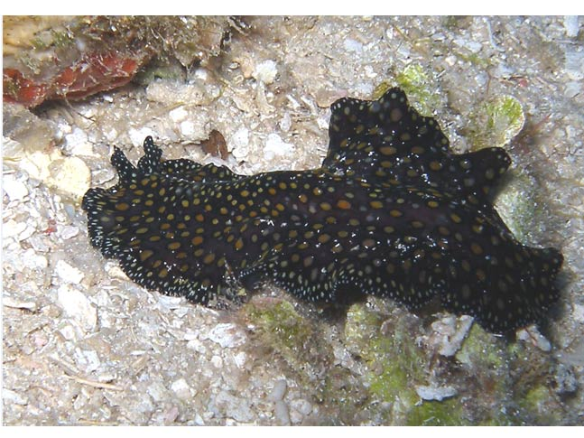

			  
			  
			  
            <DIV align="center"><!-- RRS4 <A href="javascript:Onetransport()"> --> </A></DIV>
              </TD>
            </TR>
            <TR>
              <TD bgcolor="#ffffff">
                <DIV align="center">
                  <SELECT name="Oneslide" class="SmallBlack" onChange="Onechange();">
				    <OPTION value="Images/BI_Nudibranchs_GROUP_02/01_Leopard_Flatworm.jpg"  selected>01   Leopard Flatworm</OPTION>
				  <OPTION value="Images/BI_Nudibranchs_GROUP_02/02_Feeding_Tube_Active.jpg">02   Feeding Tube Active</OPTION>
				  <OPTION value="Images/BI_Nudibranchs_GROUP_02/03_Flatworm.jpg">03   Flatworm</OPTION> 
				  <OPTION value="Images/BI_Nudibranchs_GROUP_02/04_Blackspotted_Nudibranch.jpg">04   Black_Spotted Nudibranch</OPTION>
				  <OPTION value="Images/BI_Nudibranchs_GROUP_02/05_Girdled_Glossodoris.jpg">05   Girdled Glossodoris</OPTION> 
				  <OPTION value="Images/BI_Nudibranchs_GROUP_02/06_Nembrotha.jpg">06   Nembrotha</OPTION>
				  <OPTION value="Images/BI_Nudibranchs_GROUP_02/07_Hypselodoris.jpg">07   Hypselodoris</OPTION> 
				  <OPTION value="Images/BI_Nudibranchs_GROUP_02/08_Aphelodoris_Gigas.jpg">08   Aphelodoris_gigas</OPTION>
				  <OPTION value="Images/BI_Nudibranchs_GROUP_02/09_Nudi_On_Tunicate.jpg">09   Nembrotha on Tunicate</OPTION> 
				  <OPTION value="Images/BI_Nudibranchs_GROUP_02/10_Chromodoris_Gills_Retracted.jpg">10   Chromodoris with Gills Retracted</OPTION>
				  <OPTION value="Images/BI_Nudibranchs_GROUP_02/11_Miller's_Nembrotha.jpg">11   Millers Nembrotha</OPTION> 
				  <OPTION value="Images/BI_Nudibranchs_GROUP_02/12_Batangas_Okinawa.jpg">12   Batangas okinawa</OPTION>
				  <OPTION value="Images/BI_Nudibranchs_GROUP_02/13_Pteraeolidia_ianthina.jpg">13   Pteraeolidia ianthina</OPTION> 
				  <OPTION value="Images/BI_Nudibranchs_GROUP_02/14_Tambja.jpg">14   Tambja</OPTION>
				  <OPTION value="Images/BI_Nudibranchs_GROUP_02/15_Ceratosoma_trilobatum.jpg">15   Ceratosoma trilobatum</OPTION> 
				  <OPTION value="Images/BI_Nudibranchs_GROUP_02/16_Thuridilla_lineolata.jpg">16   Thuridilla lineolata</OPTION>
				  <OPTION value="Images/BI_Nudibranchs_GROUP_02/17 Chromodoris annae.jpg">17   Chromodoris annae</OPTION> 
				  <OPTION value="Images/BI_Nudibranchs_GROUP_02/18_Flabellina_expotata.jpg">18   Flabellina expotata</OPTION>
				  <OPTION value="Images/BI_Nudibranchs_GROUP_02/19_Nudi_Feeding_Tube.jpg">19   Nudi Feeding Tube</OPTION> 
				  <OPTION value="Images/BI_Nudibranchs_GROUP_02/20_Glossodoris_atromarginata.jpg">20   Glossodoris atromarginata</OPTION>
				  <OPTION value="Images/BI_Nudibranchs_GROUP_02/21_Austraeolis_catina.jpg">21   Austraeolis-catina</OPTION> 
				  <OPTION value="Images/BI_Nudibranchs_GROUP_02/22_Jorunna_rubescens.jpg">22   Jorunna-rebescens</OPTION>
				  <OPTION value="Images/BI_Nudibranchs_GROUP_02/23_Chromodoris.jpg">23   Chromodoris</OPTION> 
				  <OPTION value="Images/BI_Nudibranchs_GROUP_02/24_Tassled_Nudibranch.jpg">24   Tassled Nudibranch</OPTION>
				  <OPTION value="Images/BI_Nudibranchs_GROUP_02/25_Flabellina.jpg">25   Flabellina</OPTION> 
				  <OPTION value="Images/BI_Nudibranchs_GROUP_02/26_Nudibranch_Gills.jpg">26   Nudibranch Gills</OPTION>
				  <OPTION value="Images/BI_Nudibranchs_GROUP_02/27_Doto.jpg">27   Doto</OPTION> 
				  <OPTION value="Images/BI_Nudibranchs_GROUP_02/28_Spanish_Dancer_Eggs.jpg">28   Spanish Dancer Eggs</OPTION>
				  <OPTION value="Images/BI_Nudibranchs_GROUP_02/29_Mexichromis_Laying_Eggs.jpg">29   Mexichromis Laying Eggs</OPTION> 
				  </SELECT>